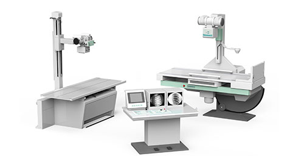
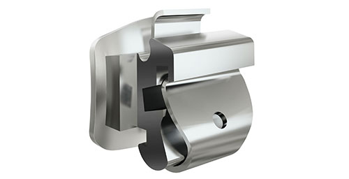

17年医疗仪器与器械行业前景分析
【中国仪器网 时事聚焦】导读：医疗器械行业其本身涉及到医药、机械、电子、塑料等多个领域，是一个多学科交叉、知识密集、资金密集的技术型产业。同时在研发、学术推广、售后服务等方面各领域间有较大跨度。
去年我国医药行业动作不断，政策不断。
而在医疗政策改革的推动下，我国医药产业的发展也正步入规范的快车道，医疗仪器与器械作为医药行业的一个重要组成部分，将与医药行业一起迎来黄金时代。据中国医药工业信息中心预测：2019年国内医疗器械市场规模将超过6000亿元，年复合增长率预计将为16.8%，仍将保持相对较快的增长态势。
在整个医疗器械产业链中，渠道(器械商业流通环节)作为连接医疗器械生产厂商与各级医疗机构的纽带，扮演着承上启下的重要角色。目前国内地区医疗器械 厂商根据自身能力特点(产品差异化与渠道把控力)构建相应的营销渠道，主要采 用的模式有底价代理、高开高返、直销自营等。由于内外资医疗器械企业在产品定位、推广能力、管理水平、合规要求等多个 方面皆有差异，因此在内外资厂商布局渠道时，采用的模式也存在一定的差异。
电子控检查动态智能标签成品展示
目前国内关于医疗器械行业的市场空间等数据，多是采用工业数据。
2015年国内医疗器械四大板块：医疗设备市场空间994亿元、高值耗材市场空间 359亿元、低值耗材市场空间331亿元、IVD产品市场空间442亿元;依据产业链调研情况，按照上述四大板块依次分别为平均70扣、28扣、55扣、45扣的比例对医疗 器械渠道环节的市场空间进行放大(70扣指渠道商从厂家拿货的价格占产品进医院 价格的70%)，得出国内医疗器械渠道环节市场空间约为4278亿元。
在日前举办的“医疗器械产业发展与创新论坛”上，中国药品监督管理研究会副秘书长王宝亭围绕中国医疗器械分产业发展现状做了主题报告。现阶段，我国医疗器械生产企业14924家，按照去年总产值4500亿元计算，平均产值仅3000万元。医疗器械行业属于技术密集型行业，涉及多学科的交叉融合，多种科技率先在医疗器械产品中应用。医疗服务行业中高素质的医疗技术人才和管理人才对医疗机构的发展起着非常重要的作用，而目前在我国医疗器械及医疗服务行业中，技术人才和管理人才都较为稀缺。
电子控检查动态智能零件产品
医疗器械行业是一个多学科交叉、知识密集、资金密集的技术型产业。
同时在研发、学术推广、售后服务等方面各领域间有较大跨度。上游产业对医疗器械的发展存在制约作用，而下游分销渠道的无序竞争，加重了行业的监管风险。尽管我国医疗器械行业已经过多年的发展取得了喜人的成就，但与发达国家相比，我国医疗器械工业基础薄弱，规模较小，产品价值较低，发展仍较为滞后。低端市场中仿制品泛滥，加速了低价恶性竞争，阻碍了中国医疗器械行业的健康发展。而高端市场长期被进口品牌占据，挤占了国产医疗器械企业的利润空间。如果无法从中低端市场攀升至高端市场，随着中国人口红利退潮，市场扩容的趋缓，低成本和规模效应势必不复存在，巨额毛利也将破灭。我国医疗器械企业想要做大做强，找准创新医疗器械的切入点才是硬道理。
依照各地出台的医疗机构器械终端加价率情况，按国内终端平均加价5%(医院 在其进货价基础上加价5%销售给患者)测算，国内医疗器械产品在医院终端销售的 市场空间约为4490亿元。国内医疗器械渠道环节市场空间巨大，渠道的巨大变革(后文将详尽分析)未 来或将使近4300亿元的市场面临价值与利益的重构。
国内医疗器械生产厂家普遍存在产品研发投入不足的情况，据中国医药物 资协会医疗器械分会的统计数据：相比国外器械生产厂家平均研发投入占比的 15%，国内厂商研发投入占比仅为3%。投入不足致使产品同质化严重。监护、 超声、注射器、真空采血管等器械的注册证均在100张以上。多年以来，技术含 量低、差异化程度低的Ⅰ类、Ⅱ类器械占据国内整体医疗器械的绝大比例。
编辑点评：一直以来我国医疗仪器与器械高端市场几乎被进口产品全面占领，而国产医疗器械生产企业只能在低端医疗器械寻找存在感，但近年来国家政策鼓励创新，支持国产医疗器械企业加大科研投入，我国医疗器械产业已初成体系，2017年必将是国产医疗设备及仪器企业腾飞的起点。
(原文标题：2017年医疗器械及设备行业前景分析)